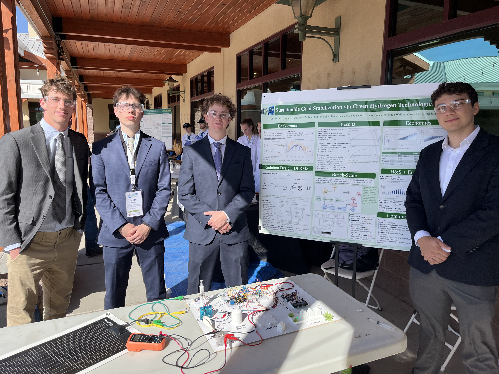

Building systems where hardware and software meet.
I’m focused on embedded systems, firmware, and hardware design. I love tough problems, creative solutions, and projects that push me past what I thought I could do. Here’s a snapshot of what I’m working on and where I’m headed.
Hello! I'm Luke.
I'm a fourth-year computer engineering major at Cal Poly. I'm passionate about computer architecture, embedded systems, and machine learning. I'm especially interested in the intersection between AI and hardware.
I'm actively looking for a full-time role for next year. If your work involves tough, low-level challenges, I’d like to be part of it.

Presenting our bench-scale system at the 2025 WERC Environmental Design Contest (I'm on the far left).